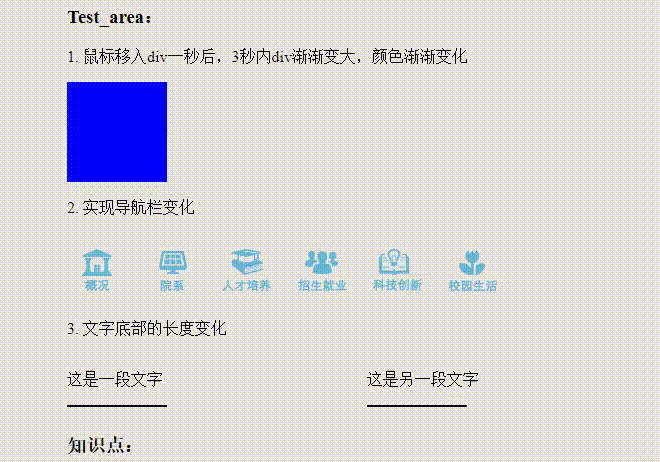

需求:
transition实现动画:
1. 鼠标移入div一秒后，3秒内div渐渐变大，颜色渐渐变化
2. 实现导航栏变化
示例：
Test_area：
1. 鼠标移入div一秒后，3秒内div渐渐变大，颜色渐渐变化
2. 实现导航栏变化
知识点：
transition-property : 规定设置过渡效果的CSS属性的名称。
transition-duration : 规定完成过渡效果需要多少秒或毫秒。
transition-delay : 定义过渡效果何时开始。
transition-timing-function : 规定速度效果的速度曲线。
transition-timing-function:
linear
ease（默认值）
ease-in
ease-out
ease-in-out
cubic-bezie:(http://cubic-bezier.com)
transition 加到hover上，鼠标移出瞬间回复原始样式，符合样式 default：all 先duration 再 delay
html源代码：
<section>
<p>1. 鼠标移入div一秒后，3秒内div渐渐变大，颜色渐渐变化</p>
<div id="div1"></div>
</section>
<section>
<p>2. 实现导航栏变化</p>
<ul class="clear">
<li></li>
<li></li>
<li></li>
<li></li>
<li></li>
<li></li>
</ul>
</section>
css源代码：
<style>
#div1{
width: 100px;height: 100px;background: blue;
transition-property: all;
transition-duration: 3s;
transition-delay: 1s;
}
#div1:hover{width: 200px;height: 200px;background: red;}
ul,li{list-style: none;margin: 0;padding: 0;}
ul{width:500px;}
ul li{width: 60px;height: 70px; float: left;background: url('./html_imgs/transition_NavBg.png'); transition-duration: 0.8s; margin-right: 15px;}
ul li:hover{cursor: pointer;}
ul li:nth-child(1){background-position: 0 -70px ;}
ul li:nth-child(2){background-position: -60px -70px ;}
ul li:nth-child(3){background-position: -120px -70px ;}
ul li:nth-child(4){background-position: -180px -70px ;}
ul li:nth-child(5){background-position: -240px -70px ;}
ul li:nth-child(6){background-position: -300px -70px ;}
ul li:hover:nth-child(1){background-position: 0 0 ;}
ul li:hover:nth-child(2){background-position: -60px 0 ;}
ul li:hover:nth-child(3){background-position: -120px 0 ;}
ul li:hover:nth-child(4){background-position: -180px 0 ;}
ul li:hover:nth-child(5){background-position: -240px 0 ;}
ul li:hover:nth-child(6){background-position: -300px 0 ;}
.clear:after{content: "";display: block;clear: both;}
</style>